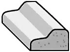
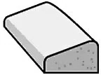
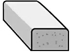
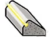
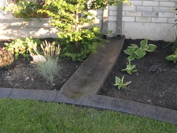

Mower edge
A low lip sits flush with the sod and supports the mower wheel. This is the most economical profile.
Home/Border styles & colours
Start with the shape, choose a surface pattern, then select the colour that sits best beside your brick, stone or planting.

A low lip sits flush with the sod and supports the mower wheel. This is the most economical profile.

The sloped face shows off the stamp and colour while the front edge meets the lawn.

A more upright divider for gardens, parks and playgrounds where you want a distinct separation.

A chamfer along the back accommodates rope lighting for a path, bed or focal planting.
Colour is mixed through the concrete. An antiquing colour can pick out the texture of a stamp. Use the samples on site for your final selection.
Concrete rain drains can be stamped and coloured with your border. Single, double and triple downpipe layouts guide water away from the foundation.

We’ll walk the property with you and measure it for a free written quote.